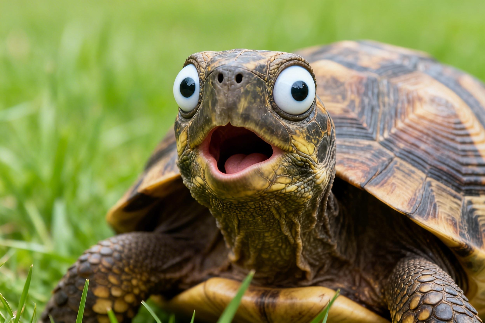
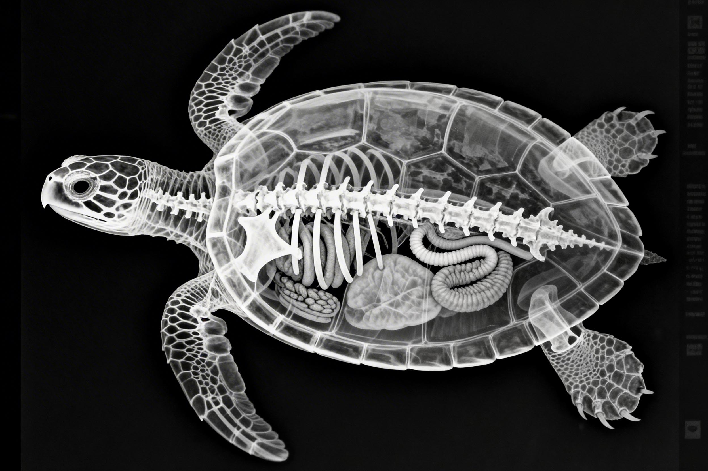
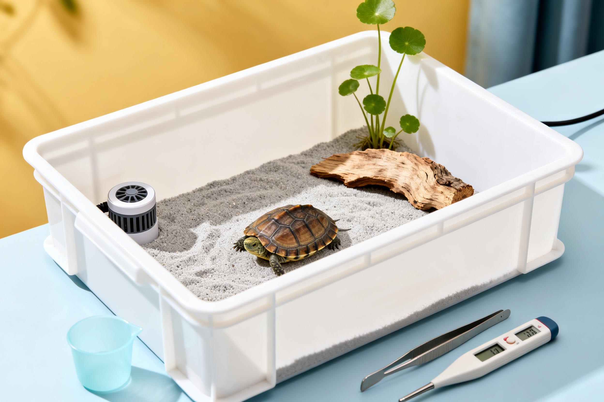

turtle · 知识库 | 综合科普
从入门到颠覆，总有一个冷知识让你吃惊
From beginner to mind-blowing, discover amazing facts about turtles.

乌龟没有声带？龟壳有神经？刷新你的认知。

用屁股呼吸、温度决定性别…揭秘龟类身体密码。

养龟必读：地摊三杰怎么选？冬眠误区全解析。
No vocal cords? Shell has nerves? Facts that will blow your mind.
Breathing through butt, temperature-dependent sex… uncover secrets.
Essential tips: choosing pet turtles, hibernation myths.